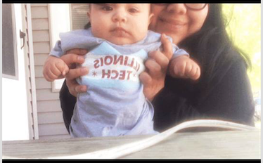

Things I Love
- I love to take long bike rides
- I love to binge watch series
- I love dogs; I have a dog named Kleopatra
- I mean I personally consider this an interest:

My Nephew
My Favorite Poem!
- Before you know what kindness really is
- you must lose things,
- feel the future dissolve in a moment
- like salt in a weakened broth.
- What you held in your hand,
- what you counted and carefully saved,
- all this must go so you know
- how desolate the landscape can be
- between the regions of kindness.
- How you ride and ride
- thinking the bus will never stop,
- the passengers eating maize and chicken
- will stare out the window forever.
- Before you learn the tender gravity of kindness
- you must travel where the Indian in a white poncho
- lies dead by the side of the road.
- You must see how this could be you,
- how he too was someone
- who journeyed through the night with plans
- and the simple breath that kept him alive.
- Before you know kindness as the deepest thing inside,
- you must know sorrow as the other deepest thing.
- You must wake up with sorrow.
- You must speak to it till your voice
- catches the thread of all sorrows
- and you see the size of the cloth.
- Then it is only kindness that makes sense anymore,
- only kindness that ties your shoes
- and sends you out into the day to gaze at bread,
- only kindness that raises its head
- from the crowd of the world to say
- It is I you have been looking for,
- and then goes with you everywhere
- like a shadow or a friend.
- https://www.poets.org/poetsorg/poem/kindness